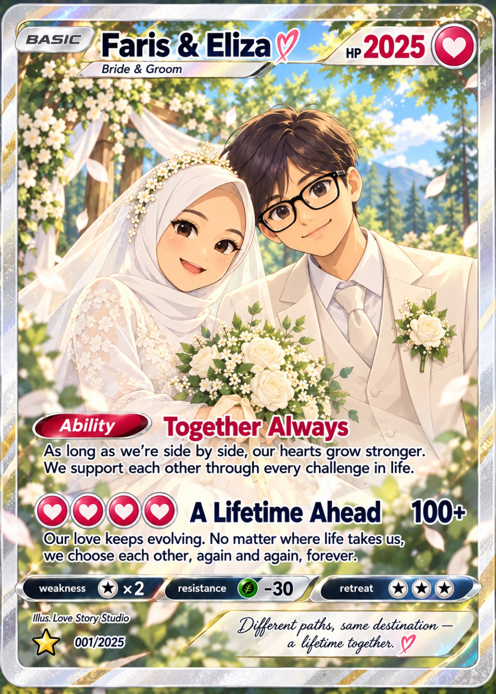

Tamu dengan beragam pakaian, rambut, dan hijab duduk di sebagian bangku kiri dan kanan menghadap pengantin. Empat tamu lainnya menikmati taman: dua mengobrol di sisi air mancur dan dua menikmati hidangan di area resepsi.

The Wedding of
Faris & Eliza
Isi nama, lalu pilih karaktermu di bawah.
Membuka taman…
The Wedding ofFaris & Eliza
Geser lebih jauh dari tengah untuk berjalan lebih cepat. Lepaskan untuk berhenti. Pengguna papan ketik bisa memakai tombol WASD atau panah.
Ketuk tempat untuk info
atau jelajahi taman dengan analog